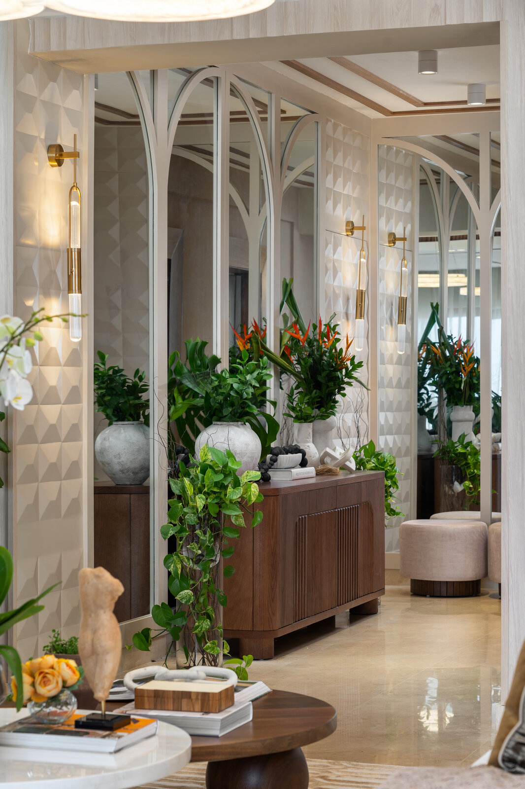

Un taller de arquitectura y diseño interior en Santo Domingo, dedicado a espacios que envejecen con gracia y se sienten profundamente personales.

Más que un servicio de diseño: un socio dedicado a hacer realidad tu visión.
Comenzamos como un estudio de arquitectura e interiorismo, apasionados por crear espacios con intención. Con los años nos hemos convertido en un estudio de diseño interior de servicio completo que trabaja en toda la República Dominicana.
Nuestro espíritu es sencillo: calidad incomparable, diseños únicos y un acompañamiento que continúa más allá de la entrega. Lo que más valoramos es la sonrisa de quienes ven, por fin, su espacio transformado.
No porque tengas recursos limitados debes aceptar la mediocridad.
Francis Kéré · Inspiración
Todo encargo comienza por escuchar. Los grandes espacios son profundamente personales — nacen de un intercambio honesto entre el estudio y quienes los habitan.
El trabajo se nutre de una materialidad cálida — nogal, lino, travertino, latón — y de un profundo respeto por la luz natural. No imponemos un estilo propio; descubrimos el tuyo.
Directora de Diseño
Lidera la dirección creativa del estudio y cada proyecto desde el concepto. Cree que un espacio bien pensado desaparece detrás de la vida que alberga.
Director de Proyectos
Coordina contratistas, artesanos y plazos para que cada obra se ejecute con la precisión y la calma que merece.
Diseñadora Junior · Auxiliar de Diseño
Acompaña al equipo en el desarrollo de detalles, materiales y maquetas, con un ojo fresco y una sensibilidad cuidadosa.
Si compartes nuestra forma de entender el espacio, nos encantaría escuchar sobre tu proyecto.
Escríbenos